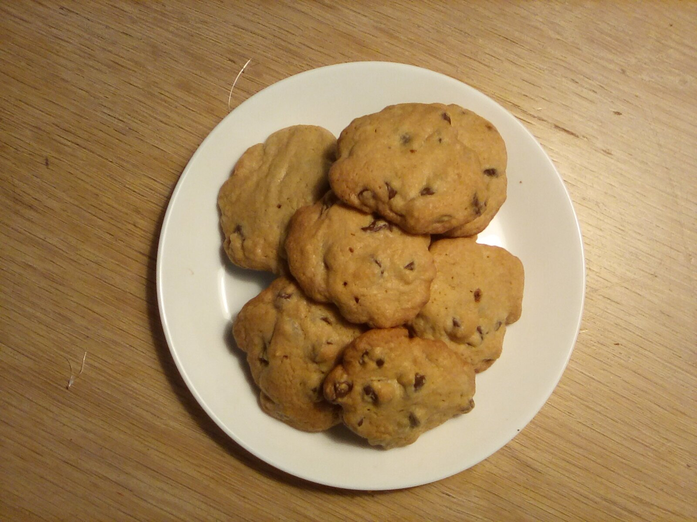

Tiffany's Chocolate Chip Cookies

Description
Classic chocolate chip cookies bake up browned and tender on sheets of parchment paper. These will be the best cookies you have ever
tasted in your life.
Bake these cookies for any family event or around the holidays.
Ingredients
- Parchment Paper
- 2 1/2 cups flour
- 1 teaspoon baking soda
- 1 teaspoon salt
- 1/2 teaspoon ground cinnamon (Optional)
- 1 cup butter, softened
- 1 cup packed brown sugar
- 1/2 cup granulated sugar
- 2 eggs
- 2 teaspoons vanilla extract
- 1 bag semi-sweet chocolate chips
- 1 cup coarsely chopped nuts